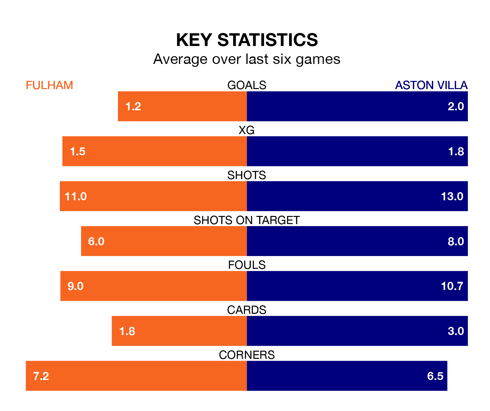

Aston Villa travel to Fulham on Saturday in the Premier League.
The visitors come into the game on the back of a defeat in their last match, having lost to Manchester United 2-1 at home, with a goal from Douglas Luiz.
The Cottagers, meanwhile, won their last match, 3-1 against AFC Bournemouth, with their goals scored by Rodrigo Muniz and Bobby Decordova-Reid.
With 50 goals in 24 games so far this season, Villa are scoring more than average in the league with 2.1 goals per game. And they are conceding fewer than average, letting in 32 goals at a rate of 1.3 per game.
Fulham, meanwhile, are below average scorers, with 1.4 goals per game, compared to a league average of 1.6. They have conceded 1.6 goals per game.
In the last 10 years, Fulham and Villa have played each other on 13 occasions. Fulham won six of them and Villa seven.
On average, the Cottagers scored 1.2 goals and the Villa 1.4 in those matches.
Their last meeting was on November 12, when Villa won 3-1 at home.
The Villa's Ollie Watkins is the league's most creative player, racking up 10 assists in 24 appearances so far this season.
For the Cottagers, Andreas Pereira has set up the most goals, having laid on five assists in 24 games.
The visitors are fifth in the table after 24 games, of which they have won 14 and drawn four, earning 46 points.
The home team are eight places behind Villa in 13th, with eight wins and five draws putting them on 29 points.
Fulham are in mixed form in the Premier League, with two wins and two draws from their last six games.
With two wins and a draw over that period, Villa's form is slightly worse – they have taken seven points from 18, compared to Fulham's eight.
Updated: 13:30 (UTC), 12/02/24